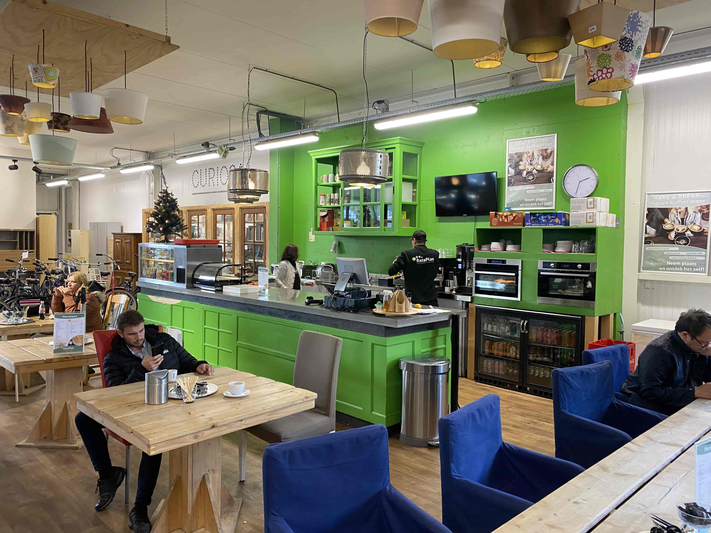

Milieu & Maatschappij
Bij Thriftopia staat duurzaamheid voorop. Op dit moment slaagt Thriftopia erin om 87% van de producten die binnenkomen te recyclen of opnieuw te gebruiken.
Bij Thriftopia staat duurzaamheid voorop. Op dit moment slaagt Thriftopia erin om 87% van de producten die binnenkomen te recyclen of opnieuw te gebruiken.
In 2022 is er in totaal 13.924 ton aan producten binnengekomen bij Thriftopia, hieronder een overzicht van de verhouding waarin producten Thriftopia binnenkomen en ook weer verlaten.
Inbreng goederen: 9.507 ton
Ophalen goederen: 3.410 ton
Inkoop gebruikte goederen: 1.007 ton
De 13.924 ton aan producten komen binnen op 3 verschillende manieren:
Thriftopia ontvangt het grootste deel van de producten (92%) helemaal kostenloos!
Verkoop in winkels: 8.087 ton
Retour stromen: 3.997 ton
**Producthergebruik
Afvoer restafval: 1.840 ton
**Materiaalhergebruik
De 13.924 ton aan producten verlaten Thriftopia op 3 verschillende manieren:
Thriftopia wist dus 12.084 ton te recyclen in 2022!
Uit onderzoek van het TNO blijkt dat met de inzameling van 1 ton goederen een kringloopbedrijf ook ongeveer 1 ton Co2 uitstoot bespaart.
Dit houdt in dat Thriftopia in 2022 dus zo'n 13.924 ton aan Co2 heeft bespaard, dit staat gelijk aan het gemiddelde energiegebruik van 3396 huishoudens!
Thriftopia biedt iedereen mogelijkheden om te werken en ook vooral aan mensen met een grote afstand tot de arbeidsmarkt, iedereen is welkom. Hiermee krijgt iedereen de kans om te werken en een inkomen te verdienen, zo kan iedereen actief bijdragen aan de maatschappij!
In 2022 had Thriftopia een totaal aan 1195 medewerkers:
Ruim 38% van de medewerkers heeft beperkte toegang tot de reguliere arbeidsmarkt. Dankzij Thriftopia hebben in 2022 in ieder geval 463 mensen nieuwe kansen gekregen op een betere toekomst.